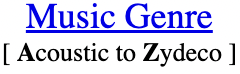
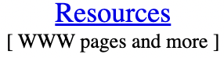
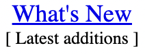

SCAN THE UBL BY...  
Buy the new U2 single now!!
Own your own copy of "Discotheque," the first single off the new U2 album"Pop" long before the rest of the world gets the chance.Place your order at CD Now and get the newest music from U2 now. |
 |
Where It's At
The Beck Web rocks! Anything and everything Beck related is beautifullyrendered in blazing technicolor for your viewing (and listening) pleasure. We have a feeling this may be the place to find out new tour dates first... |
|
Why pay retail?
Buy & sell used CDs & Movies online at Second Spin -- they've got to be the largest used record store operating on the Net. You can search by artist and title or by category and find all the music you've been looking for for less money!! Second Spin has been in business since 1987, operating four stores in Denver and Las Vegas so they have a huge selection and will pay top $$ for your used CDs and movies. |